An interactive visual suite for the Patio Adjacency Lemma — from the original hand-drawn sketch to an honest map of what is proved and what stays open. The adjacency lemma is proved; Hadwiger for k ≥ 7 remains open.
Built to be read by anyone — a curious child or a seasoned mathematician: each panel says, in plain words, what it shows and how far it goes.
How a hand-drawn zigzag on paper became a formal idea — and how a simple observation about color propagation leads to the palette-expansion number p(G).
Plain words: where the whole thing came from — a doodle.
Interactive greedy coloring on C₅. Step through each expansion live, watch the palette grow, and verify χ(G) = 1 + p(G) on a concrete example.
Plain words: add a new crayon only when forced — count how many times.
In any optimal k-coloring, every pair of color classes shares at least one edge. Proof by contradiction — animated. The key lemma that forces Kₖ adjacency.
Plain words: every two color groups always touch. Always.
What is a graph minor? What are branch sets? See how a partition of V(G) into k connected, pairwise-adjacent subgraphs certifies a Kₖ minor by contraction.
Plain words: shrink groups to dots — if all dots touch, you found a clique inside.
The constructive algorithm for building branch sets: initialize, absorb singletons, and attempt to repair missing connections — within the bounds we can prove. Tied to Open Problem 6.1.
Plain words: a recipe that keeps the rules and always stops — but doesn't always finish the job.
Mizael's alternating-connector idea: when two branch sets lack an edge, a direct neighbor (Case A) or a bridge (Case B) can restore it. A useful sufficient condition — not a guarantee in general.
Plain words: a clever patch that often works — but the patch doesn't always exist.
The honest map: what is proved (χ=1+p, the Patio Adjacency Lemma), what the construction always maintains, and exactly where the gap is — branch-set connectivity = Open Problem 6.1 = Hadwiger, open for k ≥ 7. No overclaim.
Plain words: the truth in one page — what's done, and what nobody has cracked in 83 years.
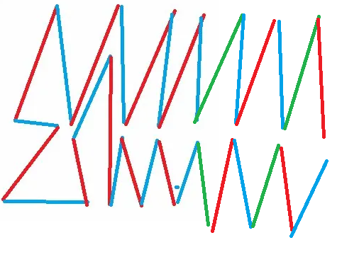
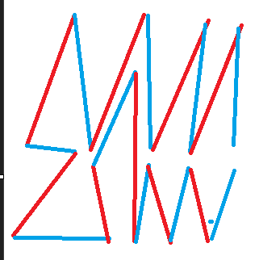
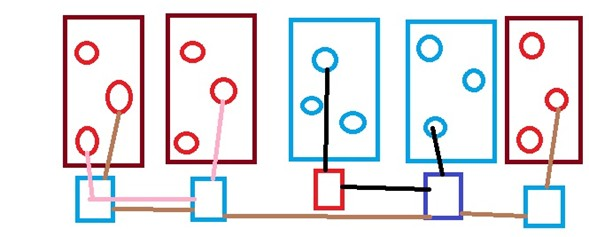